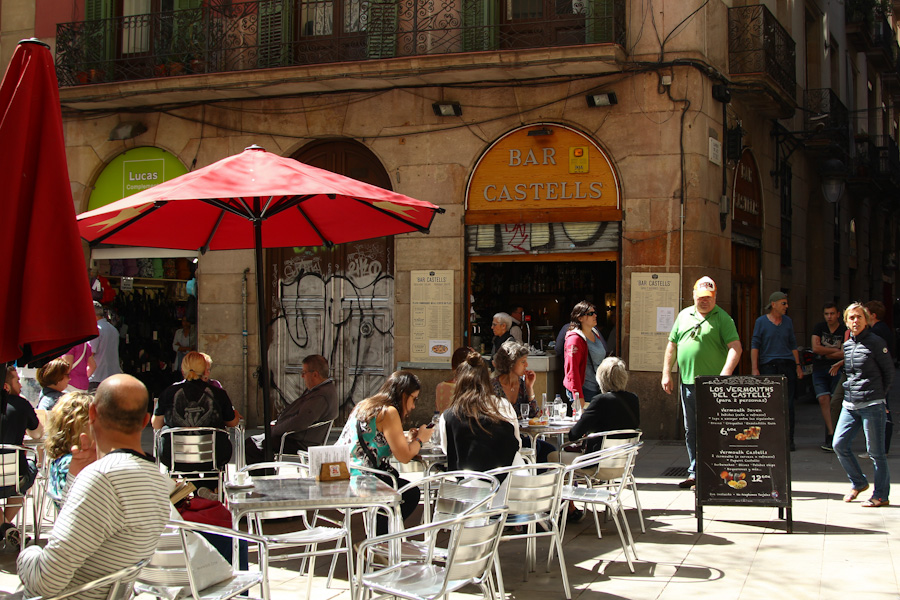
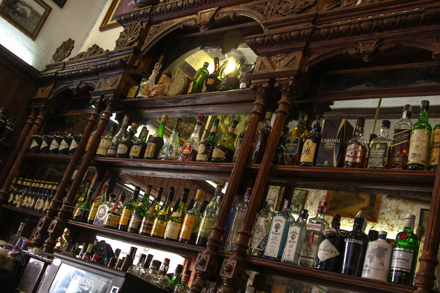
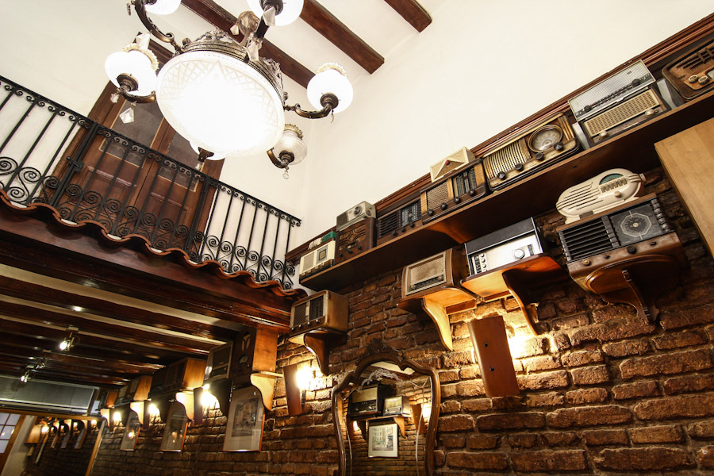
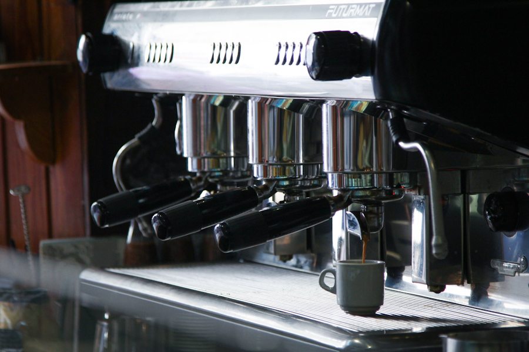
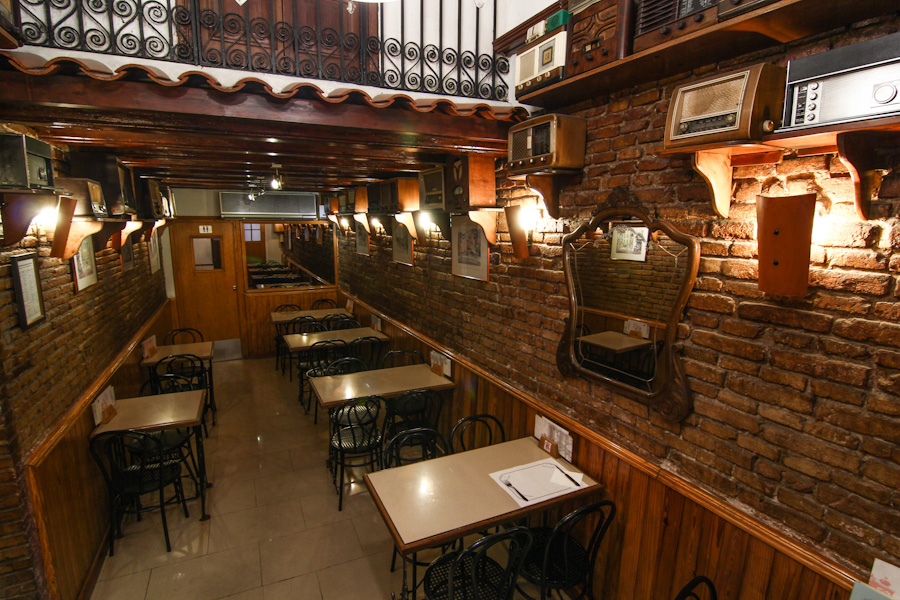
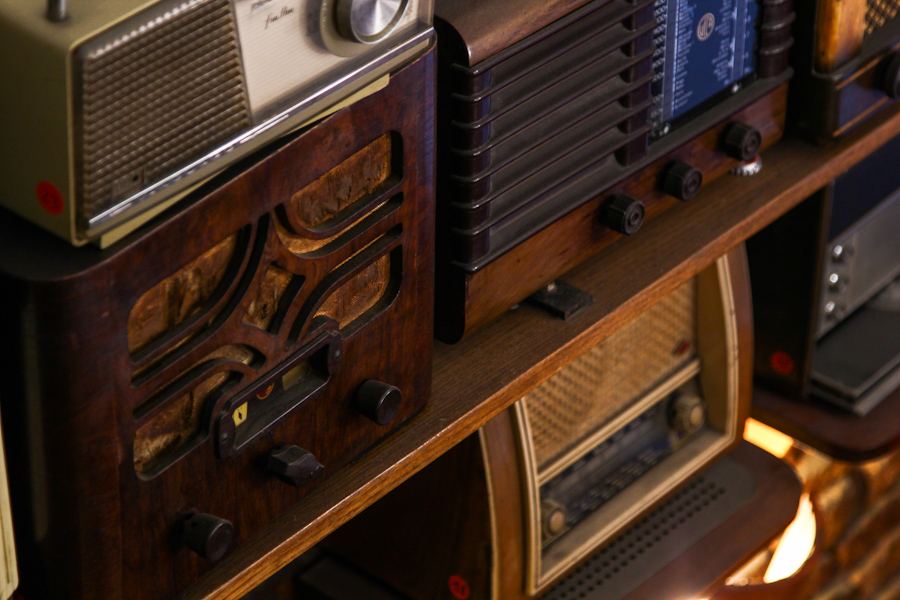
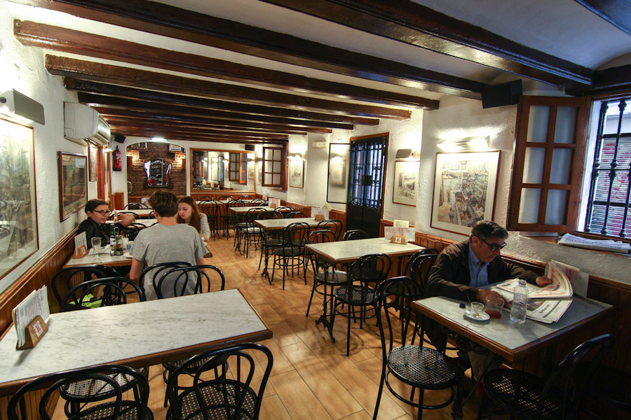

★★★★★
“Menjar local autèntic amb tapes delicioses a bon preu. El cafè també és excel·lent. T'hi sents benvingut i gaudeixes d'un ambient autèntic de barri. Només efectiu, cosa que va bé al negoci i filtra els turistes sorollosos.”
Cafè, tapes i bona conversa des de 1920. Una barra de fusta tallada a mà, una paret de ràdios velles i una plaça plena de sol.

Un negoci familiar que ha vist passar guerres, balls, eleccions i molts dilluns. La barra continua sent la mateixa.
El Bar Castells va obrir la persiana per primera vegada el 1920, en una cantonada de la plaça del Bonsuccés que aleshores feia olor de barri i de port. Des de llavors, quatre generacions han servit cafès al matí, vermuts al migdia i últimes copes a la nit.
El moble principal, una barra de fusta tallada a mà, amb columnes salomòniques i miralls picats, es va restaurar el 1980 i es va deixar tal com estava: més caràcter que polidesa. A la part del fons, una col·lecció de ràdios dels anys quaranta i cinquanta segueix encesa i, de tant en tant, sintonitzada.
Aquí no hi ha música ambiental ni carta digital. Hi ha veus, plats, premsa del dia i la mateixa truita de patates de fa dècades.
Hem canviat la cuina tres vegades. La barra, mai.

barra tallada a mà'}))"/>Quaranta-tres ràdios, una cafetera que no calla i taules de marbre per a tertúlies llargues.

paret de ràdios'}))"/>
cafetera'}))"/>
menjador de maó'}))"/>
detall ràdio'}))"/>
sala marbre'}))"/>Ressenyes de clients a Google Maps. La conversa de la barra, però per escrit.
“Menjar local autèntic amb tapes delicioses a bon preu. El cafè també és excel·lent. T'hi sents benvingut i gaudeixes d'un ambient autèntic de barri. Només efectiu, cosa que va bé al negoci i filtra els turistes sorollosos.”
“Lloc excel·lent per menjar. En un carrer lateral de la Rambla, s'omple al vespre. Bon menjar i a bon preu. El servei també és agradable. Recomanable.”
“Un ambient local meravellós i del tot autèntic. Els preus eren molt més baixos que als restaurants per a turistes de la Rambla i la majoria dels clients semblaven gent del barri. Cada bar de tapes té la seva versió de la salsa de braves, i la d'aquí és la que més em va agradar de tota l'estada a Barcelona.”
Cent anys de gent que parla. Llegeix totes les ressenyes — o deixa la teva — a Google Maps.
Veure a Google Maps